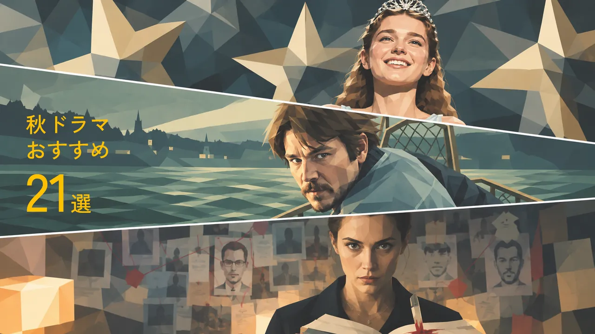
2026年9月後半〜11月に日本で配信される海外ドラマ・ドキュメンタリーから、DRAMA RADARが注目する21作品をピックアップ。
NetflixやApple TV+の大型新作だけでなく、サスペンス、ミステリー、SF、欧州ドラマ、ドキュメンタリーなど、見逃したくない作品をまとめました。
まずは一覧から気になる作品をチェック。作品名から詳しい紹介へ、配信サービスから公式作品ページへ進めます。
※注目度は作品の採点ではなく、制作陣・原作・企画・海外での反響などを踏まえた現時点での「DRAMA RADAR注目度」です。未視聴作品について、視聴後の評価を示すものではありません。
2026年秋 注目作品一覧
21作品
01｜キャリー
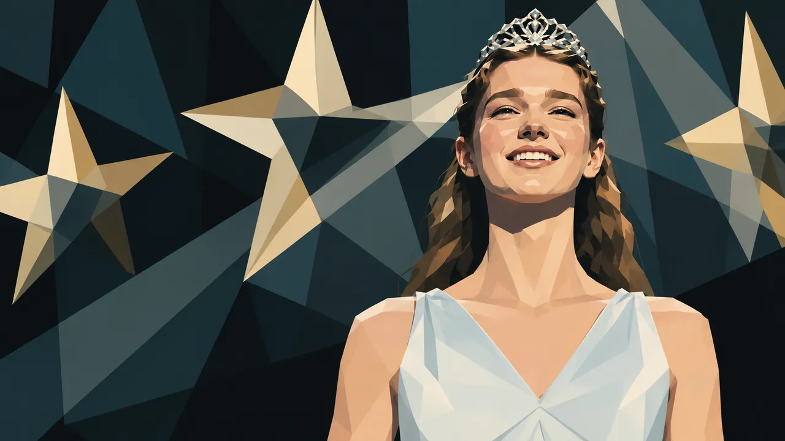
Prime Video｜10月7日｜全8話
DRAMA RADAR注目度：★★★★★
スティーヴン・キングの代表作『キャリー』を、『ザ・ホーンティング・オブ・ヒルハウス』『ミッドナイト・ミサ』などのマイク・フラナガンが全8話のシリーズとして再映像化。
孤立した高校生キャリー・ホワイトと支配的な母親という原作の核を残しながら、SNSやサイバーいじめなど、現代の高校生活を取り込んだ作品になっています。
DRAMA RADAR注目ポイント
フラナガン×キングという組み合わせだけでも今秋の最重要作候補となりそうです。単なる名作ホラーのリメイクではなく、1970年代の『キャリー』を2026年の学校社会へどう置き換えたのか、楽しみ。
すでに海外レビューも出始めており、現代化を評価する声がある一方、原作の持つ危うさが弱まったという批判もありますが、評価が割れていること自体も気になる一本。
Prime Videoで作品を見る →
一覧へ戻る ↑
02｜BELOW／ビロウ
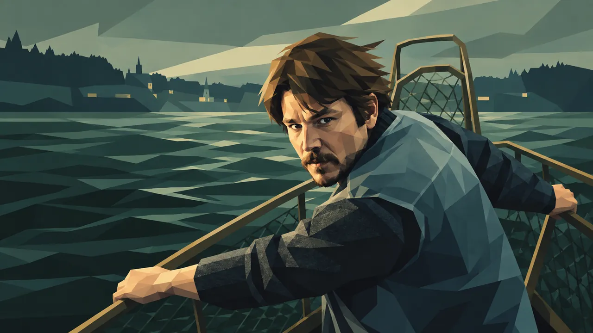
Netflix｜10月8日｜全6話｜カナダ
DRAMA RADAR注目度：★★★★★
謎の海洋生物によって大きな危険にさらされた海辺の町。生活を脅かされるなか、一人の漁師が家族と町の人々を守るため立ち上がるサスペンス。
ジョシュ・ハートネット、マッケンジー・デイヴィス、チャーリー・ヒートンらが出演します。
DRAMA RADAR注目ポイント
豪華俳優陣も注目ですが、単純な「海の怪物もの」で終わらなそう......。
漁業資源の減少や気候問題、ニューファンドランドの地域コミュニティを背景に怪異が入り込む構造で、現地コミュニティも制作に関わっています。全6話というコンパクトさも魅力。
今秋の埋もれ良作候補として特に気になる一本です。
Netflixで作品を見る →
一覧へ戻る ↑
03｜ザ・トラップ
Netflix｜10月13日｜ドイツ
DRAMA RADAR注目度：★★★★★
妹を殺されてから10年間、自宅にこもって暮らしてきた作家リザ・コンラート。ある日、妹を殺したと思われる男をテレビで目にしたリザは、危険な計画を思いつきます。
メラニー・ラーベのベストセラーを原作とするドイツ発の心理サスペンスです。
DRAMA RADAR注目ポイント
派手な大作ではなく、未解決事件と一人の女性の執念から始まる心理戦。
こういうUSやUK発以外の、日本では大きく宣伝されない可能性のあるサスペンス・ミステリーには良作も多いので、DRAMA RADARでは積極的にピックアップしていきたいです。
Netflixで作品を見る →
一覧へ戻る ↑
04｜ヴァンパイア・レスタト
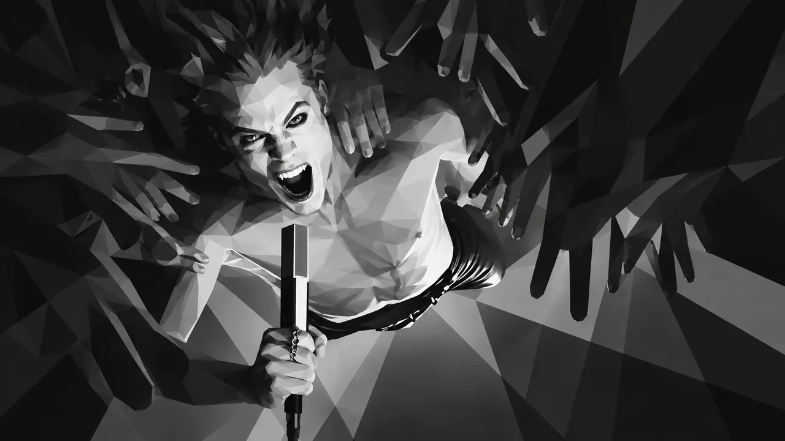
U-NEXT｜10月2日｜全7話
DRAMA RADAR注目度：★★★★★
『インタビュー・ウィズ・ヴァンパイア』の第3シーズンにあたる新章。
今度はレスタト自身の視点から物語が展開し、「不死身のロックスター」としてバンドを率いて各都市を巡るツアーへ。アン・ライスのヴァンパイア世界が新たな表情を見せます。日本ではU-NEXT独占配信です。
DRAMA RADAR注目ポイント
ゴシックホラー、耽美な人間ドラマ、音楽という、好きな人には刺さるかなり独特な組み合わせの作品。
前シリーズからの新章なのでハードルはありますが、未視聴の人には、見始めるきっかけに良いかもしれません。
U-NEXTで作品を見る →
一覧へ戻る ↑
05｜クリスタル・レイク／殺人鬼の母
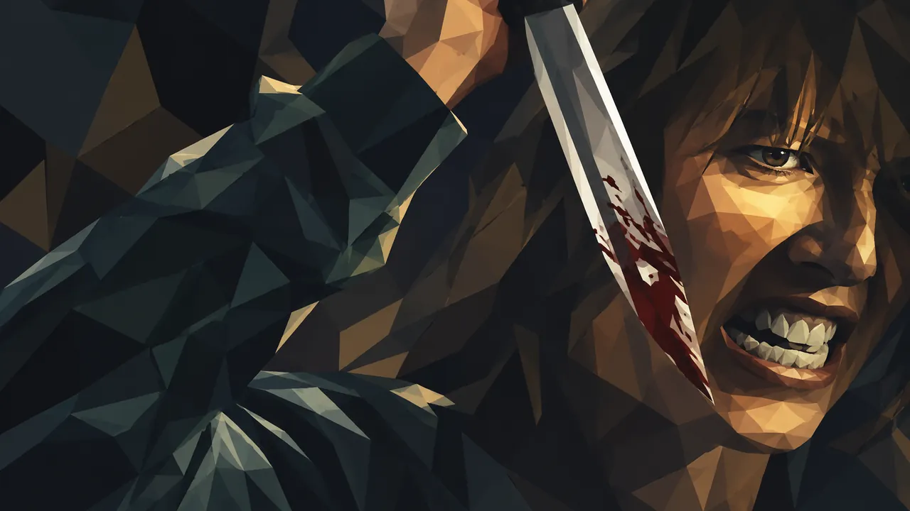
U-NEXT｜10月15日｜全8話
DRAMA RADAR注目度：★★★★★
『13日の金曜日』第1作に登場したジェイソンの母、パメラ・ボーヒーズの過去を描く前日譚。
息子を失った母親が、なぜ狂気へと向かっていったのかを描くホラー・ミステリー。日本ではU-NEXT独占配信です。
DRAMA RADAR注目ポイント
制作が『ミッドサマー』『ヘレディタリー／継承』のA24。
さらに『IT／イット ウェルカム・トゥ・デリー』のブラッド・ケイレブ・ケインがクリエイター／ショーランナーを務める、制作布陣からも気になる作品。
単なる人気ホラーIPの再利用ではなく、A24的な心理ミステリー作品になってそうな雰囲気も注目です。
U-NEXTで作品を見る →
一覧へ戻る ↑
06｜Nocturne／ノクターン
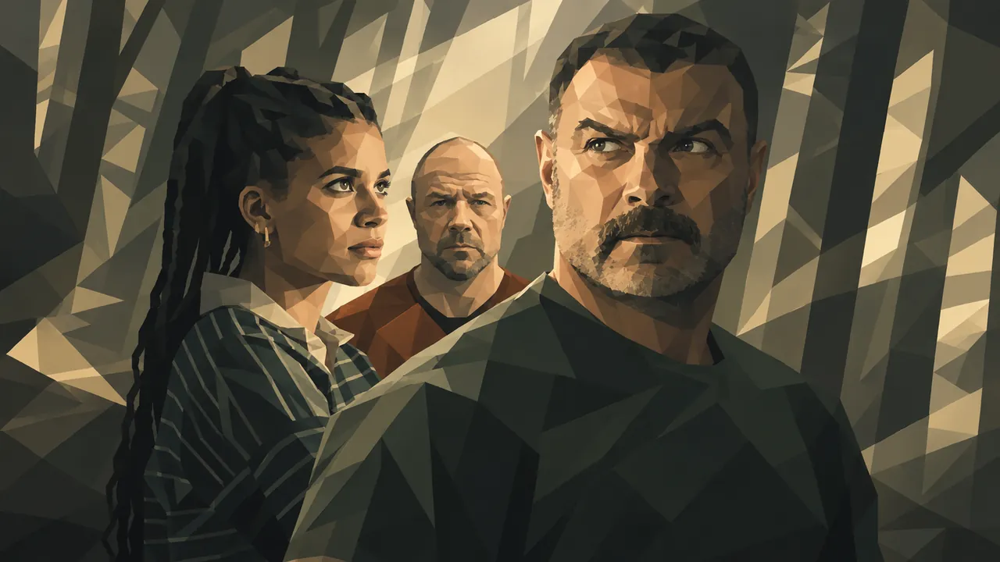
Apple TV｜10月30日｜全10話
DRAMA RADAR注目度：★★★★★
フィラデルフィアの殺人課を離れ、静かな町へ移った元軍人の刑事ジョナ・リン。しかし、連続殺人犯ユレク・ヴァルターによって町と家族が脅かされ、FBI捜査官サーガ・バウアーとともに事件を追うことになります。
リーヴ・シュレイバー、ザジー・ビーツ、スティーヴン・グレアム出演。
DRAMA RADAR注目ポイント
原作は北欧犯罪小説の人気作家ラーシュ・ケプレル『砂男』（世界的ベストセラーの北欧サスペンス「ヨーナ・リンナ」シリーズ）。リーヴ・シュレイバー、ザジー・ビーツ、スティーヴン・グレアムというキャストも強力。
北欧ミステリーをアメリカへ移植した犯罪ドラマですが、大型の北欧ミステリー原作作品かつ、現在出ている情報やティザーを見る限り、しっかり作り込まれたApple TVクオリティの出来栄えのようで、非常に楽しみな一本です。
Apple TVで作品を見る →
一覧へ戻る ↑
07｜12 12 12
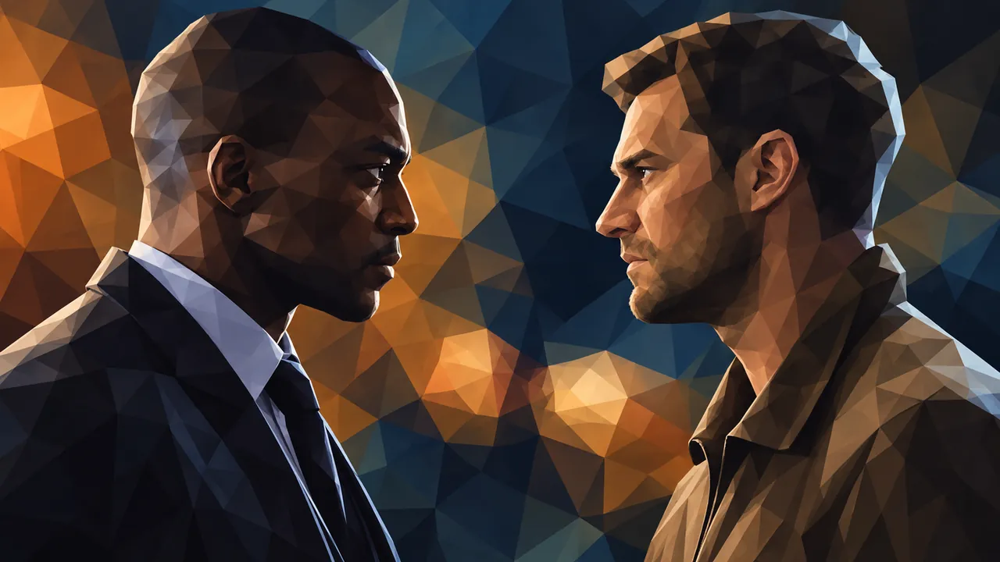
Apple TV｜11月13日｜全8話
DRAMA RADAR注目度：★★★★★
チューリッヒの地下にある銀行金庫を狙う大規模な強盗事件。
各エピソードを「12か月の準備」「12時間の犯行」「12日間の事件後」という3つの時間軸で展開。アンソニー・マッキーとジェイミー・ドーナンが主演します。
DRAMA RADAR注目ポイント
企画・あらすじだけでもかなり面白そうな作品です。
強盗そのものだけでなく、準備と事件後までを同時に見せることで、通常のクライムドラマとは違うサスペンスになってそう......。
Apple TVで作品を見る →
一覧へ戻る ↑
08｜エデンの東
Netflix｜10月1日｜全7話
DRAMA RADAR注目度：★★★★☆視聴済み
ジョン・スタインベックの名作をゾーイ・カザンが全7話でシリーズ化。フローレンス・ピュー、クリストファー・アボット、マイク・ファイストらが出演し、トラスク家を中心とした世代を超える家族の物語を描きます。
管理人コメント｜視聴済み
3世代にわたる家族の苦悩と葛藤、愛憎の物語。かなり考えさせられる作品でした。
絶望的で悲惨な運命をたどる一族。その原因はいったいどこにあるのか。何が原因で、誰が悪いのか。その始まりはどこで、何を間違えたのか。カルマ、運命、宿命といったことまで考えさせられます。
超有名な名著が原作なので当然ではありますが、この映像版でも十分に余韻が残りました。
そしてひとつ強く感じたのは、親から子への「無償の愛」の大切さ。家族の連鎖を描く作品だからこそ、改めて考えさせられました。
Netflixで作品を見る →
一覧へ戻る ↑
09｜ザ・ディプロマット シーズン4
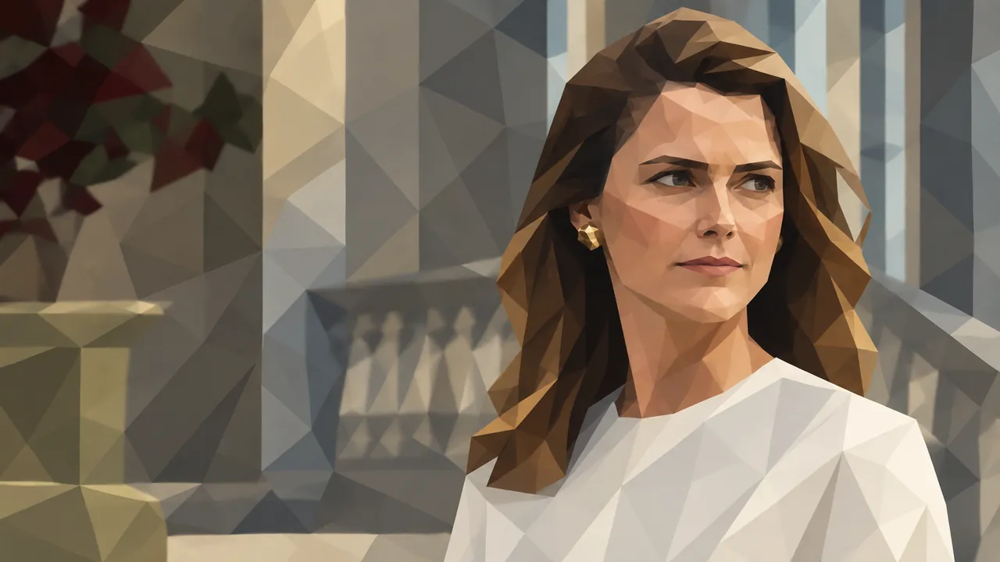
Netflix｜10月15日
DRAMA RADAR注目度：★★★★☆
ケリー・ラッセル演じる外交官ケイト・ワイラーを中心に、国際政治と夫婦関係を同時進行で描く政治サスペンスのシーズン4。
DRAMA RADAR注目ポイント
政治ドラマでありながら、会話劇とサスペンスとして見せる傑作シリーズ。
新規ではなく、継続して高い水準を維持する既存シリーズですが、どのシーズンもクオリティは保たれており、中弛みも少なく、予想外のハラハラする展開が多く、一気見できる候補です。
Netflixで作品を見る →
一覧へ戻る ↑
10｜Lupin／ルパン シーズン4
Netflix｜10月23日｜全8話｜フランス
DRAMA RADAR注目度：★★★★☆
オマール・シー演じる怪盗アサン・ディオプが帰還。
前シーズンから4年後、服役中のアサンの前で、彼の知らない「ルパン」を名乗る人物による事件が発生。濡れ衣を晴らすため、再びルパンとして動き始めます。
DRAMA RADAR注目ポイント
シーズン4までついにきて、今やNetflixを代表する非英語圏シリーズの一つになっている作品。
フランス作品でありながら世界的ヒットへ成長したシリーズなので、欧州ドラマの大型枠として今回も注目です。シーズン1の完成度がかなり高いので、未視聴の方にはシーズン1がおすすめです。
Netflixで作品を見る →
一覧へ戻る ↑
11｜ローダウン 独自調査ファイル シーズン2
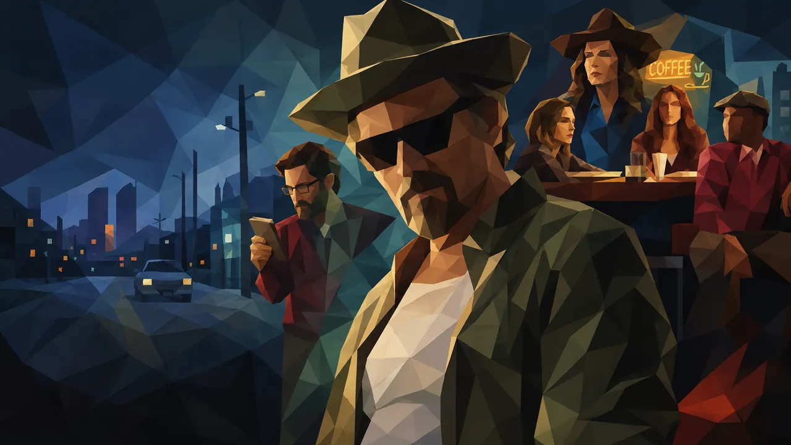
Disney+｜10月15日
DRAMA RADAR注目度：★★★★☆
イーサン・ホーク演じる自称「真実史家」の市民ジャーナリスト、リー・レイボン。
オクラホマ州タルサを舞台に、地元の権力者や街の裏側に隠された真実を追う犯罪ミステリーです。
DRAMA RADAR注目ポイント
典型的な刑事ものではなく、地方都市＋市民ジャーナリスト＋陰謀という組み合わせが、地味良作ドラマ好きには非常にそそられるプロットです。
大型タイトルの陰に隠れそうですが、DRAMA RADAR的には、こういう作品もじゃんじゃん視聴して、紹介していきたいです。
Disney+で作品を見る →
一覧へ戻る ↑
12｜VisionQuest／ヴィジョンクエスト
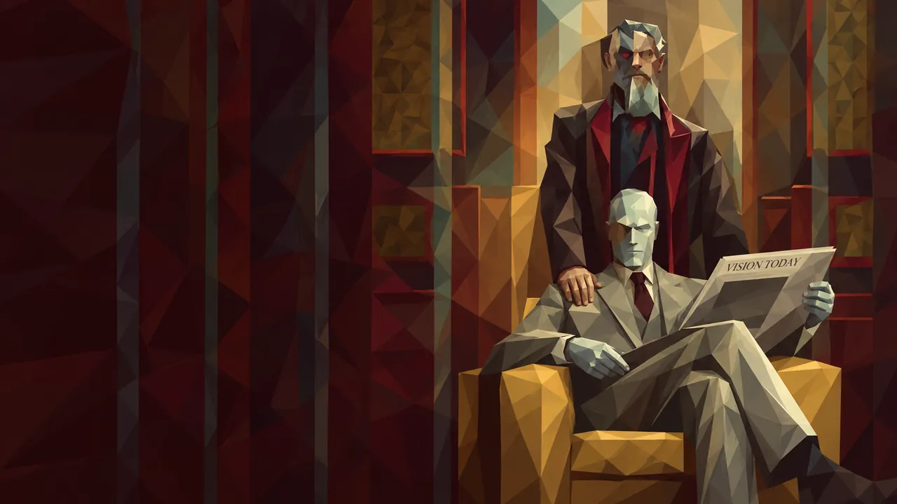
Disney+｜10月14日
DRAMA RADAR注目度：★★★★☆
再起動されたヴィジョンは、自らのプログラム内に残されたJARVIS、FRIDAY、ウルトロンなどのAI人格と対話しながら、自分が何者なのかを探していきます。
やがて謎の少年トーマス・シェパードとともに逃亡することに。
DRAMA RADAR注目ポイント
MCU作品も、ファンやシリーズを追っていない人には今やとっつきにくいブランドになり始めていますが、本作はAI、記憶、人格、アイデンティティという普遍的なSFテーマや、昨今のAI時代の潮流とぴたりと合いそう。
映像面やアクションなどのクオリティも間違いないと思うので、ファンならずとも気になる作品です。
Disney+で作品を見る →
一覧へ戻る ↑
13｜ターミナル・リスト シーズン2
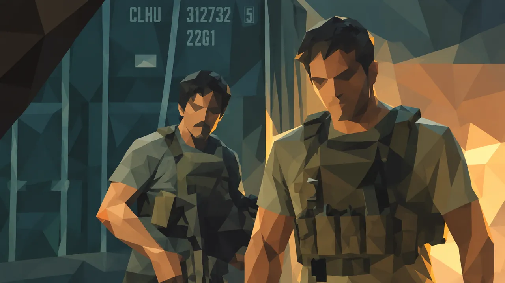
Prime Video｜10月21日
DRAMA RADAR注目度：★★★★☆
クリス・プラット演じるジェームズ・リースが再び国際的な陰謀へ。
CIAとの取引をきっかけに、かつての仲間とともに再び勢力を伸ばすテロ組織を追い、モスクワからラングレーへと世界規模の戦いが展開します。
DRAMA RADAR注目ポイント
今秋のPrime Videoを代表する大型サスペンス。
アクション中心に見えますが、スパイ／陰謀ものとしての厚みにも定評があるシリーズなので、カラッと、ザ・エンタメを見たい時に良さそうです。
Prime Videoで作品を見る →
一覧へ戻る ↑
14｜ナイフエッジ：ミシュランの星への挑戦 シーズン2
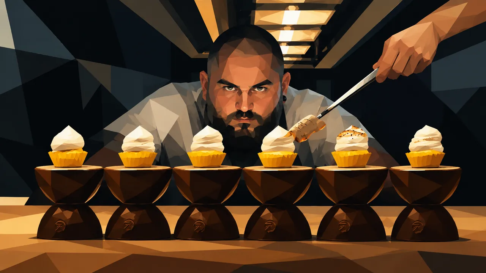
Apple TV｜9月25日｜全8話
DRAMA RADAR注目度：★★★★☆
世界各地の一流レストランに密着し、ミシュランの星を獲得・維持するまでを追うドキュメンタリー。
シーズン2もジェシー・バージェスがホストを務め、ゴードン・ラムゼイらが製作総指揮。シーズン1はBAFTAにもノミネートされています。
DRAMA RADAR注目ポイント
海外のグルメ番組は、非日常＋旅気分も味わえて、ご飯時の視聴に重宝できるジャンルですが、本作は、才能、仕事、経営、プレッシャー、人間関係を描く仕事ドキュメンタリーとしての厚みもあって、秋ドラマの注目の一本です。
Apple TVで作品を見る →
一覧へ戻る ↑
15｜マシュー・ペリー：ザ・ファイナル・イヤーズ
Netflix｜10月27日｜全3話
DRAMA RADAR注目度：★★★★☆
『フレンズ』のチャンドラー役で世界的に知られたマシュー・ペリー。
ハリウッドでの成功だけでなく、依存症について公に語り、支援活動にも取り組んだ彼の人生と死を、身近な人々の証言などから振り返る3部構成のドキュメンタリーです。
DRAMA RADAR注目ポイント
単なるスター回顧ではなく、成功の裏側にあった依存症や本人の活動までどこまで掘り下げるのか。
海外ドラマファン、業界の裏側が気になる人などにとっては無視できない、おそらく映画を見ているような高クオリティな人物ドキュメンタリーになってそうで楽しみです。
Netflixで作品を見る →
一覧へ戻る ↑
16｜シェフ、オークワフィナ ～料理でたどるルーツ～
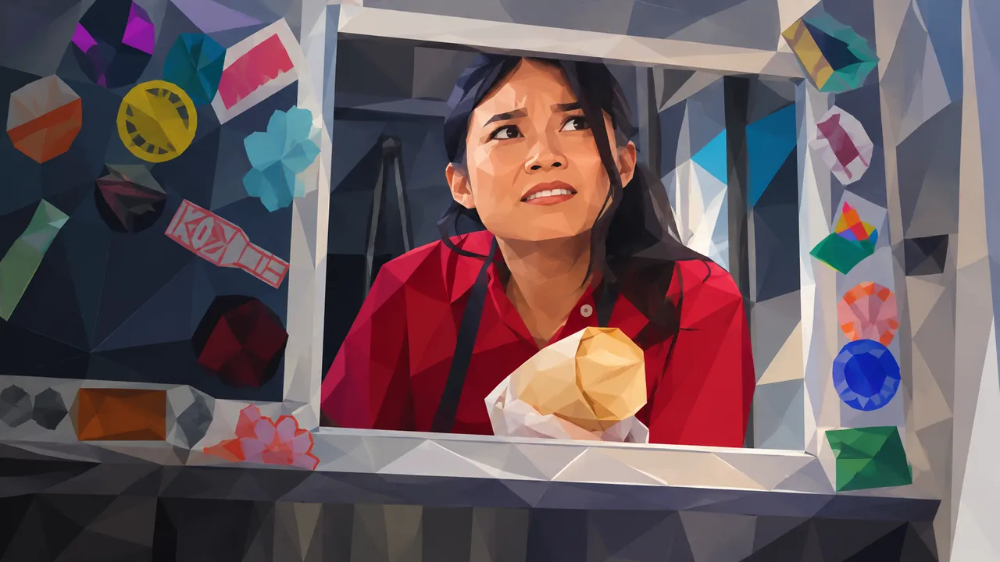
Apple TV｜11月6日｜全8話
DRAMA RADAR注目度：★★★★☆
俳優・コメディアンのオークワフィナが、かつて家族が営んでいた広東料理店を復活させるため、料理を一から学んでいくドキュメンタリー。
アメリカ各地を巡りながら、現代のアジア系アメリカ料理や自身の家族のルーツにも向き合います。
DRAMA RADAR注目ポイント
食のルーツをたどる旅としても楽しめそうで、しかも本作は「広東料理」なので面白そうです。
「有名人が料理に挑戦する番組」以上に、家族・移民・文化継承の話になりそうなのがポイント。ヒューマンドキュメンタリー枠。
Apple TVで作品を見る →
一覧へ戻る ↑
17｜TYSON／タイソン
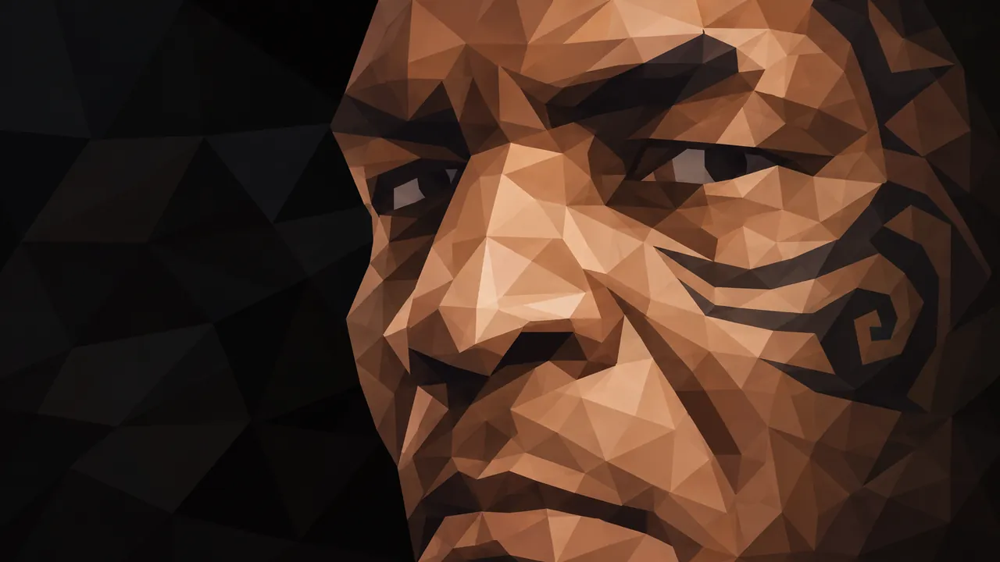
Netflix｜10月13日｜全4話
DRAMA RADAR注目度：★★★★☆
史上最年少でヘビー級世界王者となったマイク・タイソン。
ブルックリンでの少年時代から世界的スターへの急上昇、栄光、論争、その代償までを、本人や関係者へのインタビューから振り返る4部構成のドキュメンタリーです。
DRAMA RADAR注目ポイント
格闘技ファンにはたまらない、注目のドキュメンタリーになりそうです。
現役中のホリフィールド戦で相手の耳を噛んだ事件をはじめ、引退後にも飛行機内で乗客を殴る様子が撮影されるなど、話題には事欠かない元世界王者。よって、単純なスポーツ成功譚では成立しないはず。
栄光と暴力性、名声、転落、再生までをどこまで踏み込んで描いているか......。
Netflixで作品を見る →
一覧へ戻る ↑
18｜失踪者捜索人 マサントニオ
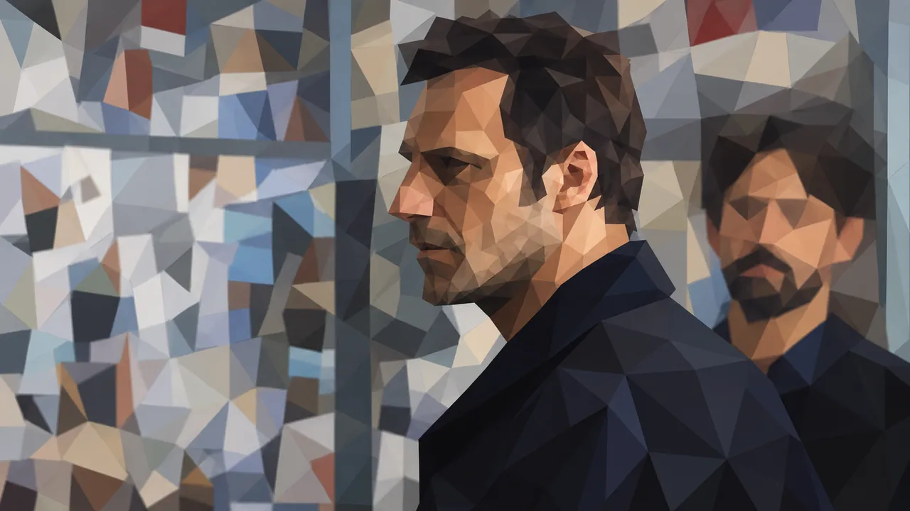
U-NEXT｜10月1日｜イタリア
DRAMA RADAR注目度：★★★★☆
失踪事件を専門に追うマサントニオを主人公とするイタリアのミステリードラマ。
失踪者を探す過程から、その人物の人生や周囲の人間関係が浮かび上がっていきます。
DRAMA RADAR注目ポイント
NetflixやApple TVの大型新作に埋もれそうだけど、良作の匂いがするイタリア産ミステリー。
失踪者を探す過程から、その人物の人生や周囲の人間関係を浮かび上がらせていくタイプの作品。気になります。
一覧へ戻る ↑
19｜EXPO－爆発物処理班－ シーズン2
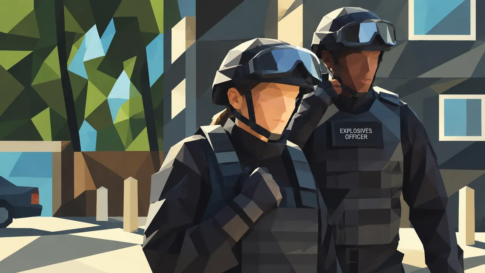
U-NEXT｜10月15日｜英国
DRAMA RADAR注目度：★★★★☆
爆発物処理の専門チームを題材にした英国サスペンスのシーズン2。
爆発物の脅威に対応する専門家たちを中心に、緊迫した事件と人間ドラマを描きます。
DRAMA RADAR注目ポイント
爆発物処理という設定自体が常にタイムリミットと緊張感を生むため、派手なアクションとは違うタイプのサスペンスとして期待。
英国犯罪ドラマ好きならチェックしておきたい作品です。
一覧へ戻る ↑
20｜WAPO：ベルリン水上警察
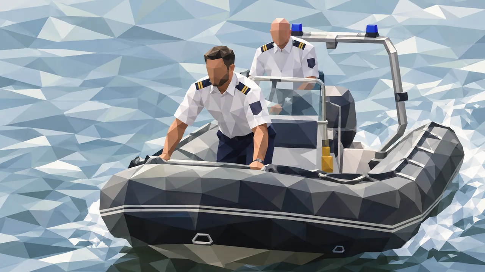
U-NEXT｜10月1日｜ドイツ
DRAMA RADAR注目度：★★★☆☆
ベルリンの水路を管轄する水上警察を舞台にしたドイツの刑事ドラマ。
水上警察の捜査官たちが、ベルリンの河川や水路で発生するさまざまな事件を追います。
DRAMA RADAR注目ポイント
ベルリンという都市を「水上警察」から見るニッチな設定自体が面白そうです。
今秋の最重要作というより、見落としそうな良作の可能性が高い欧州刑事ドラマです。
一覧へ戻る ↑
21｜地球：生き物たちの故郷～アフリカ
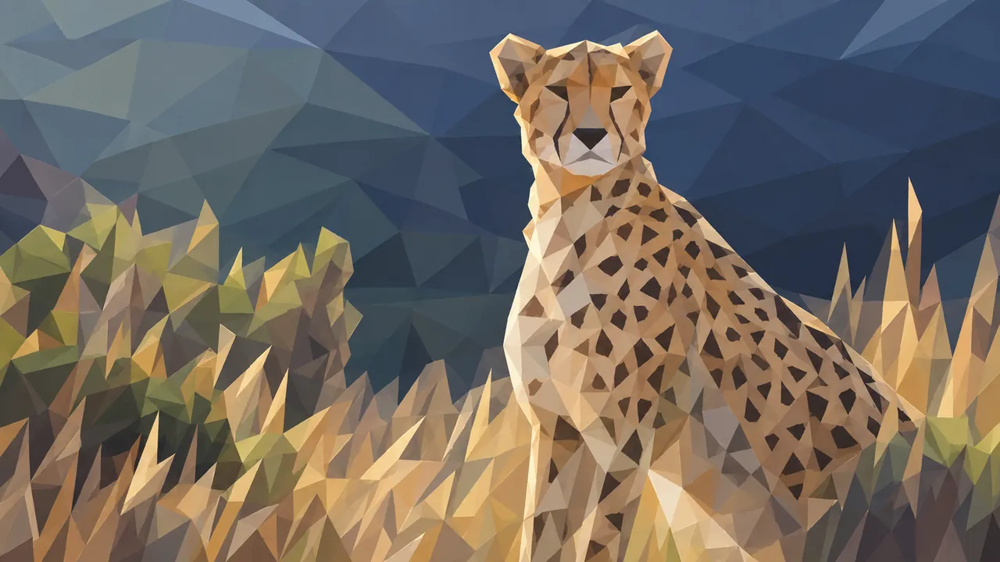
Disney+｜10月3日｜全7話
DRAMA RADAR注目度：★★★☆☆
砂漠、ジャングル、島、サバンナなど、アフリカ大陸の多様な自然環境と、そこに生きる動物たちを追う全7話の自然ドキュメンタリー。
さまざまな環境が、生物の進化や生存をどのように形作ってきたのかを映像で追います。
DRAMA RADAR注目ポイント
サスペンスやミステリー中心の今回のラインナップから少し離れていますが、映像美を楽しめそうな一本です。
自然環境が生物の進化や生存をどう形作ってきたのかという視点もあり、プロのカメラワークで、ドラマ以外の良質な映像作品を探している人向けに合いそうです。
Disney+で作品を見る →
一覧へ戻る ↑